Eiichiro Oda
Romance Dawn
Influenciado por Shanks, Luffy inicia sua jornada para se tornar o Rei dos Piratas ao encontrar um tesouro
escondido pelo anterior Rei dos Piratas, Gold Roger. No início de sua jornada, ele luta contra a capitã
pirata Alvida e liberta seu grumete Koby, que quer se tornar um fuzileiro naval. Luffy e Koby chegam a
Shells Town, onde encontram o corrupto capitão da Marinha, Axe-Hand Morgan, seu filho Helmeppo e o caçador
de piratas Roronoa Zoro. Gold Roger, o Rei dos Piratas, alcançou enorme riqueza, fama e poder. Antes de ser
executado, ele anunciou à multidão que havia deixado todo o seu tesouro em um determinado local que só
poderia ser descoberto escarnecendo o mundo inteiro, fazendo com que o mundo entrasse na Grande Era dos
Piratas. Onze anos depois, os Piratas Ruivos chegaram a uma pequena vila portuária chamada Foosha Village.
Depois de um ano lá, um menino chamado Monkey D. Luffy veio ao navio para provar que era forte o suficiente
para se juntar a eles, esfaqueando o rosto sob o olho esquerdo. Os piratas e Luffy foram então para o bar,
onde os piratas brindaram à loucura de Luffy enquanto comiam e bebiam. Luffy tentou convencer o capitão,
"Ruivo" Shanks, a deixá-lo se juntar à tripulação, mas Shanks recusou gentilmente devido ao fato de Luffy
ser muito jovem e incapaz de nadar.
Episódios : 4 (1-4)
Volume: 1 (1)
Pontos-chave da trama: Monkey D. Luffy se torna um pirata após ser inspirado por Shanks ; Zoro se junta. Koby , Helmeppo e Alvida são apresentados; Os Piratas do Chapéu de Palha são formados.
Características do Arco
Capítulos : 7 (1-7)Episódios : 4 (1-4)
Volume: 1 (1)
Pontos-chave da trama: Monkey D. Luffy se torna um pirata após ser inspirado por Shanks ; Zoro se junta. Koby , Helmeppo e Alvida são apresentados; Os Piratas do Chapéu de Palha são formados.

Eiichiro Oda
Orange Town
Luffy e seu primeiro tripulante, Zoro, chegam a Orange Town, onde encontram uma ladra chamada Nami, que
odeia piratas. O trio forma uma equipe improvável, lutando para libertar a cidade do domínio de Buggy, o
Palhaço. Buggy possui uma fruta que permite que ele sepere seu corpo em diversas partes.
Este arco apresenta dois personagens principais: Nami, que se tornará a navegadora dos Chapéus de Palha, e
Buggy, um ex-companheiro de tripulação de Shanks.
O flashback de Buggy é de particular importância, pois mais tarde é revelado que ele e Shanks faziam parte
dos Roger Pirates, e que o homem que os socou durante a discussão foi o primeiro imediato da tripulação,
Silvers Rayleigh.
Buggy, sendo parte da tripulação do Rei dos Piratas, irá ajudá-lo a se tornar um líder dos fugitivos de
Impel Down antes do Arco Marineford.
Este arco apresenta o primeiro usuário de Akuma no Mi que Luffy conhece: Buggy (embora ele tenha lutado
contra Alvida no Arco Romance Dawn, ela não tinha sua Akuma no Mi na época).
Buggy, sendo derrotado e voando para longe, daria início ao mini arco "Buggy's Crew: After the Battle!".
É a segunda vez que Luffy é reconhecido pelas autoridades. Depois de derrotar Buggy, os fuzileiros navais
levam em consideração as ações de Luffy antes de emitir uma recompensa. Só depois da batalha no Arco Arlong
Park é que Luffy receberia sua primeira recompensa.
Episódios : 5 (4-8)
Volumes: 3 (1-3)
Pontos-chave da trama: Nami é apresentada e junta-se não oficialmente. Buggy, o Palhaço, é apresentado.
Características do Arco
Capítulos : 14 (8-21)Episódios : 5 (4-8)
Volumes: 3 (1-3)
Pontos-chave da trama: Nami é apresentada e junta-se não oficialmente. Buggy, o Palhaço, é apresentado.

Eiichiro Oda
Syrup
Após Nami formar uma parceria com os dois como navegadora, a tripulação chega a Syrup Village e procura um
navio para usar. Lá, eles encontram um mentiroso crônico chamado Usopp. Quando uma trama tortuosa é
revelada, a coragem de Usopp é posta à prova enquanto a tripulação se prepara para uma batalha com os
Piratas Gato Preto. Os Chapéus de Palha chegam a Syrup Village, onde encontram Usopp, que nutre noções de
grandeza ao comandar os Piratas Usopp. Este grupo é composto por Usopp e três crianças leais da aldeia:
Tamanegi, Ninjin e Piiman. Os Piratas Usopp não causam problemas reais, mas frequentemente irritam os
moradores, geralmente dando falsos avisos de ataques de piratas.
A amiga rica de Usopp, Kaya, está acamada, mas é bem cuidada por seus dois mordomos, Merry e Klahadore. No
entanto, Klahadore esconde um segredo perigoso: ele é, na verdade, o malvado capitão Kuro, líder dos Piratas
Gato Preto. Embora se acreditasse que Kuro foi executado anos atrás, na realidade, um impostor foi trocado
para ocupar seu lugar. Desde então, o verdadeiro Kuro está disfarçado, trabalhando para conquistar o
respeito dos moradores e os bens de Kaya para que possa ter uma aposentadoria tranquila.
Episódios : 10 (9-18)
Volumes: 3 (3-5)
Pontos-chave da trama: Usopp se junta; o Going Merry é obtido.
Características do Arco
Capítulos : 20 (22-41)Episódios : 10 (9-18)
Volumes: 3 (3-5)
Pontos-chave da trama: Usopp se junta; o Going Merry é obtido.
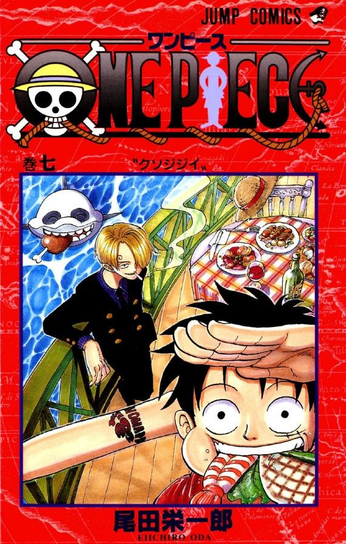
Eiichiro Oda
Baratie
Usopp se junta à tripulação como atirador de elite. Em busca de um cozinheiro para seu navio, a tripulação
vai a um restaurante marítimo conhecido como Baratie. Porém, o restaurante é atacado pelo poderoso Don
Krieg, que retornou da Grand Line após ser atacado por Dracule Mihawk, e quer usar o Baratie como embarcação
para voltar. Os Piratas do Chapéu de Palha - Luffy, Zoro, Nami e o recém-chegado Usopp - inspecionam seu
novo navio pirata, o Going Merry, e também projetam um Jolly Roger para ele. Como teste das capacidades do
navio, Luffy e Usopp disparam um dos canhões a bordo contra uma formação rochosa. No entanto, sem o
conhecimento deles, dois caçadores de piratas estavam na rocha, e um deles atacou o navio em retaliação.
Luffy lutou com ele, mas Zoro apontou que ele era seu amigo. Os dois caçadores de recompensas eram Johnny e
Yosaku.
Depois que os Chapéus de Palha pediram desculpas e Nami curou Yosaku de seu escorbuto, a tripulação percebeu
que precisariam de um cozinheiro para manter a qualidade saudável de seus estoques de alimentos antes de
partirem para a Grand Line. Para retribuir o favor por terem sido ajudados, Johnny e Yosaku informaram à
tripulação sobre um restaurante flutuante no meio do oceano onde poderiam encontrar um cozinheiro,
conduzindo-os até o restaurante mencionado, o Baratie.
Episódios : 12 (19-30)
Volumes: 4 (5-8)
Pontos-chave da trama: Nami sai com Going Merry ; Sanji se junta; Dracule Mihawk é apresentado e deixa cicatrizes em Roronoa Zoro ; os Sete Senhores da Guerra do Mar são apresentados.
Características do Arco
Capítulos : 27 (42-68)Episódios : 12 (19-30)
Volumes: 4 (5-8)
Pontos-chave da trama: Nami sai com Going Merry ; Sanji se junta; Dracule Mihawk é apresentado e deixa cicatrizes em Roronoa Zoro ; os Sete Senhores da Guerra do Mar são apresentados.
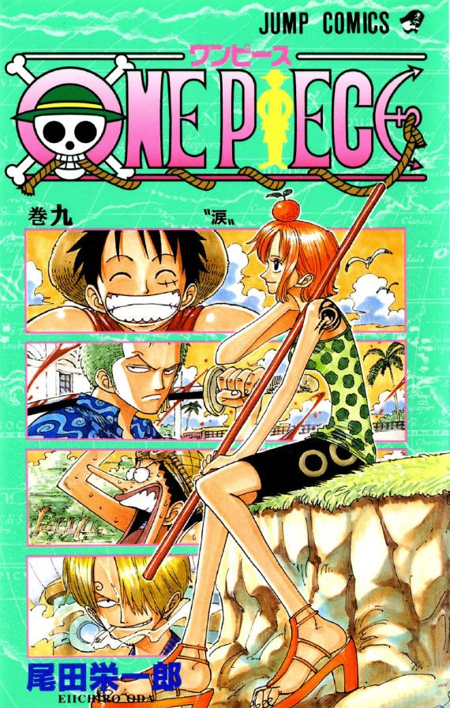
Eiichiro Oda
Arlong Park
Com Sanji do Baratie se juntando à tripulação e Nami roubando o navio, a tripulação a segue até uma ilha sob
o controle do pirata homem-peixe Arlong. Nami revela que ela é membro dos Piratas Arlong e simplesmente
ajudou a tripulação para que pudesse pegar o ouro mais tarde. Mas por que ela seguiria um homem como Arlong?
O arco começa seguindo o final do Arco Baratie, com Luffy, Sanji e Yosaku indo para o Parque Arlong em um
pequeno barco. Para passar o tempo, Yosaku conta a eles sobre os Sete Senhores da Guerra do Mar e como isso
se relaciona com seu destino atual. Quando Sanji duvida que Nami esteja indo para lá, Yosaku explica que
eles foram capazes de estimar seu curso depois que ele e Johnny suspeitaram da conexão entre os dois antes
de serem jogados para fora do Going Merry. Os dois notaram que Nami estava interessada em sua cópia do
pôster de procurado de Arlong, e seu comportamento rapidamente se tornou suspeito quando lhe disseram que
Arlong recentemente havia se tornado mais ativo. Enquanto isso, Nami chega ao Parque Arlong no Going Merry.
Assim que ela chega ao portão do parque, um menino a confronta, tentando lutar contra Arlong pela morte de
seu pai. Nami dá um tapa nele e lhe dá algum dinheiro para fazê-lo ir embora. Depois disso, Arlong e sua
tripulação são apresentados, e é revelado que Nami faz parte dos piratas de Arlong.
Episódios : 14 (31-44)
Volumes: 4 (8-11)
Pontos-chave da trama: Nami entra oficialmente; Homens-Peixe são apresentados. Jinbe é mencionado pela primeira vez. Luffy recebe um pôster de procurado .
Características do Arco
Capítulos : 27 (69-95)Episódios : 14 (31-44)
Volumes: 4 (8-11)
Pontos-chave da trama: Nami entra oficialmente; Homens-Peixe são apresentados. Jinbe é mencionado pela primeira vez. Luffy recebe um pôster de procurado .
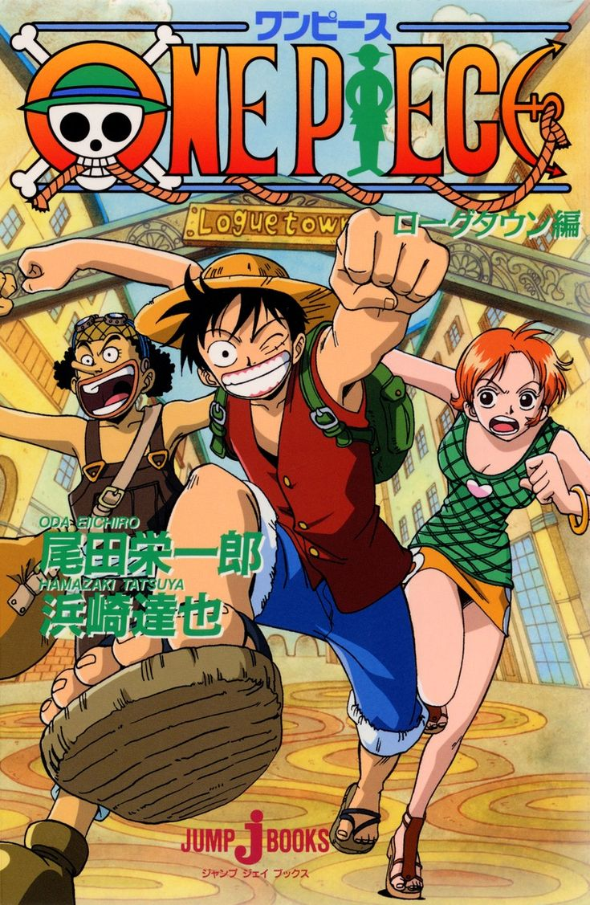
Eiichiro Oda
ilha de LogueTown
Após a entrada oficial de Nami, a tripulação segue para a última cidade antes da
entrada da Grand Line, Loguetown, local onde Gold Roger nasceu e foi executado. Eles não apenas terão que
lidar com um poderoso capitão da Marinha e seu segundo em comando, que lembra Zoro de seu passado, mas
também com inimigos anteriores em busca de vingança. O arco começa com os Chapéus de Palha descansando no
convés do Going Merry quando um panfleto cai do jornal que Nami está lendo, mostrando a recompensa de 30
milhões pela cabeça de Monkey D. Luffy. Luffy está mais do que feliz com isso, embora Nami diga a ele que
isso significará mais estresse para a tripulação agora que as pessoas estarão atrás dele. Zoro então avista
uma ilha, que Nami aponta ser Loguetown, a última parada no East Blue antes da Grand Line, bem como o local
de nascimento e morte do famoso pirata Gold Roger. A tripulação decide parar lá para pegar suprimentos.
Episódios : 7 (45, 48-53); Os episódios 50 e 51 são fillers.
Volumes: 2 (11-12)
Pontos-chave da trama: Frutas do Mi do tipo Logia são introduzidas; Zoro obtém Sandai Kitetsu e Yubashiri ; Smoker , Tashigi e uma figura misteriosa são apresentados. Os Chapéus de Palha entram na Grand Line
Características do Arco
Capítulos : 5 (96-100)Episódios : 7 (45, 48-53); Os episódios 50 e 51 são fillers.
Volumes: 2 (11-12)
Pontos-chave da trama: Frutas do Mi do tipo Logia são introduzidas; Zoro obtém Sandai Kitetsu e Yubashiri ; Smoker , Tashigi e uma figura misteriosa são apresentados. Os Chapéus de Palha entram na Grand Line
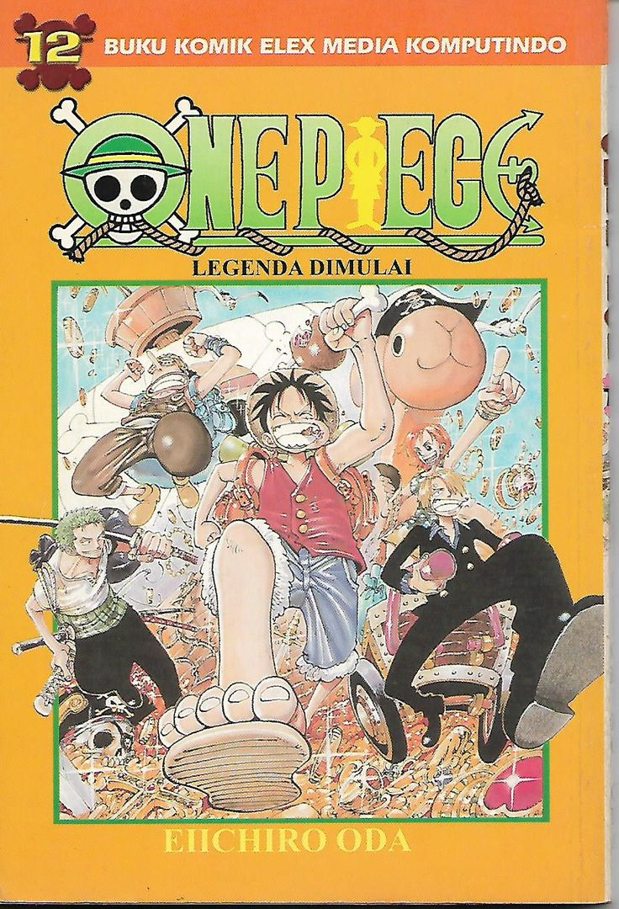
Eiichiro Oda
Montanha Reversa
A tripulação entrou na Grand Line, mas encontra um obstáculo assim que entra: uma
baleia gigante que engole o navio inteiro. Também dentro da baleia estão dois bandidos misteriosos. E
descombrem que dentro dessa baleia vive um homem, um senhor de idade, que outra hora já foi um médico.
Enquanto os Chapéus de Palha navegam em meio a uma tempestade, Nami percebe que estão se dirigindo para a
Reverse Mountain para acessar a Grand Line. A tripulação expressa descrença com a ideia, com Zoro se
perguntando por que eles não podem simplesmente ir para o sul. De repente, a tempestade para, e Nami revela
que estão no Calm Belt, uma das duas faixas de oceano que cercam a Grand Line, onde não há ventos ou
correntes. Nami incentiva a tripulação a remar de volta para a tempestade, mas os Reis dos Mares que
infestam a água então se levantam. Os Chapéus de Palha lutam para fugir e, uma vez que escapam, voltam sua
atenção para navegar com sucesso na perigosa corrente até a Montanha Reversa. Seu leme logo quebra, mas
Luffy protege o Going Merry de atingir a montanha enquanto os Chapéus de Palha navegam com sucesso para a
Grand Line.
Episódios : 3 (61-63)
Volume: 1 (12)
Pontos-chave da trama: Laugh Tale , Laboon , Crocus e Log Poses são introduzidos.
Características do Arco
Capítulos : 5 (101-105)Episódios : 3 (61-63)
Volume: 1 (12)
Pontos-chave da trama: Laugh Tale , Laboon , Crocus e Log Poses são introduzidos.
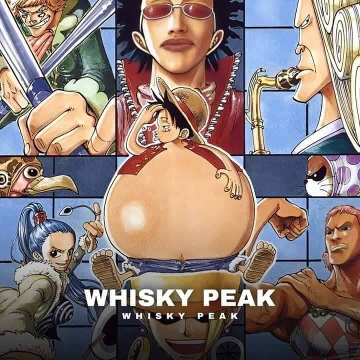
Eiichiro Oda
Ilha de Whisky Peak
Liderados pelo misterioso Sr. Wednesday, a tripulação segue para Whiskey Peak, onde os
habitantes da cidade imediatamente iniciam uma festa para comemorar sua chegada. Mas há mais nesta cidade do
que parece... A tripulação rapidamente chega ao local, comendo, bebendo e flertando (no caso de Sanji e
Usopp) noite adentro, até que finalmente todos adormecem. No entanto, Igarappoi, assim como alguns outros
agentes disfarçados, revelam-se como membros do esquivo sindicato criminoso Baroque Works, mas tanto Zoro
quanto Nami fingiram desmaiar, frustrando seu ataque surpresa. Este sindicato opera apenas com as
atribuições delegadas aos seus agentes pelo líder, que, como qualquer outro membro com status de agente
numérico, permanece secreto e anônimo. Quando os caçadores de recompensas da cidade, os Milhões, são
descobertos, eles caçam e tentam assassinar Zoro, que, sem muito esforço, os mata aos poucos, deixando
ansioso o Sr. ser tratado.
Episódios : 4 (64-67)
Volumes: 2 (12-13)
Pontos-chave da trama: Nefertari Vivi e Karoo juntam-se não oficialmente; Crocodile e Ms. All Sunday são apresentados.
Características do Arco
Capítulos : 9 (106-114)Episódios : 4 (64-67)
Volumes: 2 (12-13)
Pontos-chave da trama: Nefertari Vivi e Karoo juntam-se não oficialmente; Crocodile e Ms. All Sunday são apresentados.
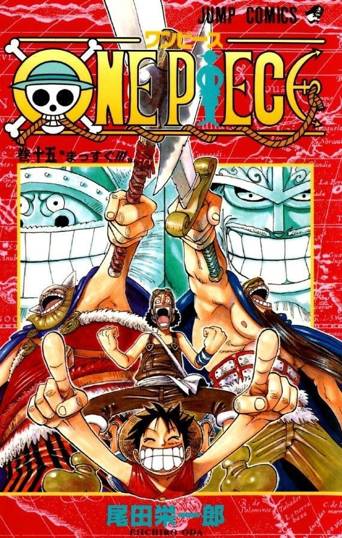
Eiichiro Oda
Ilha de Little Garden
Em sua missão de trazer a Princesa Vivi, que estava disfarçada na Baroque Works como
Sra. Wednesday, para Alabasta, a tripulação desembarca em Little Garden, que na verdade é uma enorme ilha
que ainda está presa na era pré-histórica. No entanto, há mais do que dinossauros nesta ilha, como a
tripulação logo descobre quando encontra dois gigantes que estão em combate há mais de 100 anos e quatro
membros de alto escalão da Baroque Works.
Com a recém-adquirida Princesa Vivi a bordo, os Chapéus de Palha logo se encontram na ilha de Little Garden,
um nome impróprio, já que a ilha é tudo menos pequena. Ela está presa em uma época pré-histórica e repleta
de enormes dinossauros e plantas gigantes. Enquanto Usopp e Nami se sentem desconfortáveis ao sair do navio,
Vivi e Luffy decidem explorar a ilha.
Eles logo conhecem Dorry, um guerreiro gigante de Elbaf que faz amizade com eles. Um pouco depois, Sanji e
Zoro brigam sobre quem conseguiria mais carne primeiro. Eles saem do navio em busca de animais para usar na
aposta. Deixados sozinhos no navio, Nami e Usopp descobrem por que a ilha se chama Little Garden. É chamada
Little Garden por causa de quem a habita. Eles ficam apavorados quando Brogy, outro gigante, aparece e
decapita um tiranossauro rex. Ele decide levá-los para casa com ele, causando grande alarme neles, com a
impressão de que quer comê-los.
Episódios : 8 (70-77)
Volumes: 3 (13-15)
Pontos-chave da trama: Gigantes são introduzidos; Usopp manifesta desejo de ir até Elbaf ; Nami é picada por um inseto perigoso.
Características do Arco
Capítulos : 15 (115-129)Episódios : 8 (70-77)
Volumes: 3 (13-15)
Pontos-chave da trama: Gigantes são introduzidos; Usopp manifesta desejo de ir até Elbaf ; Nami é picada por um inseto perigoso.
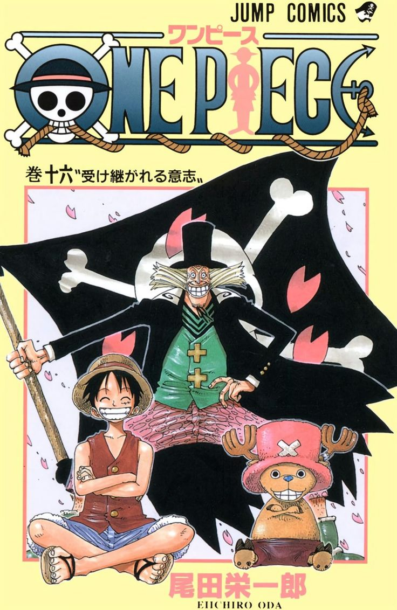
Eiichiro Oda
Ilha de Drum
Quando Nami contrai uma doença fatal, a tripulação é forçada a parar na Ilha Drum, um
país sem rei que tenta estabelecer um novo governo. Devido às ações do rei anterior, Wapol, resta apenas um
médico - uma "bruxa" chamada Kureha que vive no topo de uma montanha. Luffy e Sanji devem chegar ao pico,
mas o exilado Rei Wapol retorna para recuperar seu país. Nami contrai uma febre mortal em Little Garden,
forçando os Piratas do Chapéu de Palha a fazer um desvio para a ilha sem rei de Drum. No caminho para a
ilha, são atacados por um grupo de piratas liderados por Wapol, cujo Baku Baku no Mi lhe permite comer
qualquer coisa e assimilá-la para si mesmo. Após um breve conflito, Luffy envia Wapol voando para o mar, e
os Chapéus de Palha continuam para a Ilha Drum. Ao pousarem, são atacados novamente, desta vez pela milícia
da Ilha Drum. No entanto, depois de ouvir sobre a situação deles, Dalton, o ex-capitão da guarda, cancela o
ataque e os leva para a cidade de Bighorn.
Episódios : 14 (78-91)
Volumes: 3 (15-17)
Pontos-chave da trama: Tony Tony Chopper entra após curar a doença de Nami ; Frutas do Diabo do tipo Zoan são introduzidas; o Testamento de D. e Barba Negra são mencionados pela primeira vez; O verdadeiro nome de Gol D. Roger é revelado.
Características do Arco
Capítulos : 25 (130-154)Episódios : 14 (78-91)
Volumes: 3 (15-17)
Pontos-chave da trama: Tony Tony Chopper entra após curar a doença de Nami ; Frutas do Diabo do tipo Zoan são introduzidas; o Testamento de D. e Barba Negra são mencionados pela primeira vez; O verdadeiro nome de Gol D. Roger é revelado.
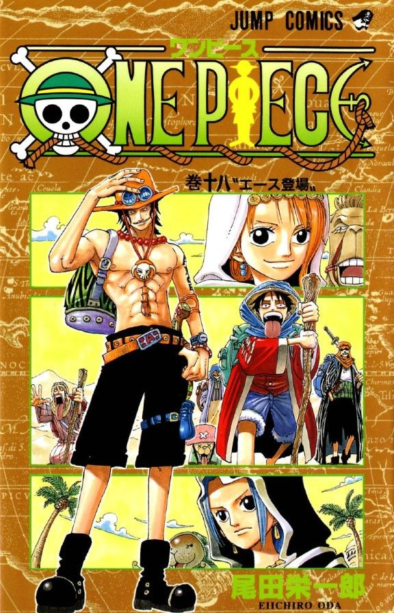
Eiichiro Oda
Ilha de Alabasta
A tripulação, entre eles o assistente de Kureha, Tony Tony Chopper, finalmente chega a
Alabasta, que está à beira da guerra civil. Vivi deve chegar aos rebeldes e contar-lhes a verdadeira causa
por trás do conflito, mas Crocodile, líder da Baroque Works e um dos Sete Senhores da Guerra do Mar, não
ficará apenas parado e observando. No final, a Baroque Works, as forças da marinha, os piratas, a guarda
real e o exército rebelde enfrentam-se numa batalha que determinará o destino do próprio país. O Going Merry
está a caminho de Alabasta, e a tripulação está tentando pescar para comer. Vivi explica que Crocodile é
visto como um herói em Alabasta e que ninguém desconfia que ele planeja dominar o reino. De repente, eles
passam por um ponto quente (um vulcão submarino que torna o mar fumegante), Usopp e Luffy pegam o Sr. 2 em
suas varas de pescar, coincidentemente ele fez um curso semelhante. A tripulação o puxa e rapidamente faz
amizade com ele, principalmente pelo quão divertido ele é, especialmente por sua habilidade de se
transformar em outras pessoas com a Mane Mane no Mi. Ele imita todos no navio, exceto Sanji, que estava
cozinhando no momento, e Vivi, em quem ele simplesmente não tocou. Bon Kurei é então recolhido por seu
próprio navio e tripulação e vai embora, jurando amizade.
Episódios : 39 (92-130); Os episódios 93 , 98 - 99 , 101 - 102 são preenchimentos.
Volumes: 8 (17-24)
Pontos-chave da trama: Vivi e Karoo deixam a tripulação ; Nico Robin se junta; Portgas D. Ace , Vivre Cards , Poneglyphs , Seastone , Pluton e o conceito de Armas Antigas são introduzidos, Nami obtém seu Clima-Tact .
Características do Arco
Capítulos : 63 (155-217)Episódios : 39 (92-130); Os episódios 93 , 98 - 99 , 101 - 102 são preenchimentos.
Volumes: 8 (17-24)
Pontos-chave da trama: Vivi e Karoo deixam a tripulação ; Nico Robin se junta; Portgas D. Ace , Vivre Cards , Poneglyphs , Seastone , Pluton e o conceito de Armas Antigas são introduzidos, Nami obtém seu Clima-Tact .
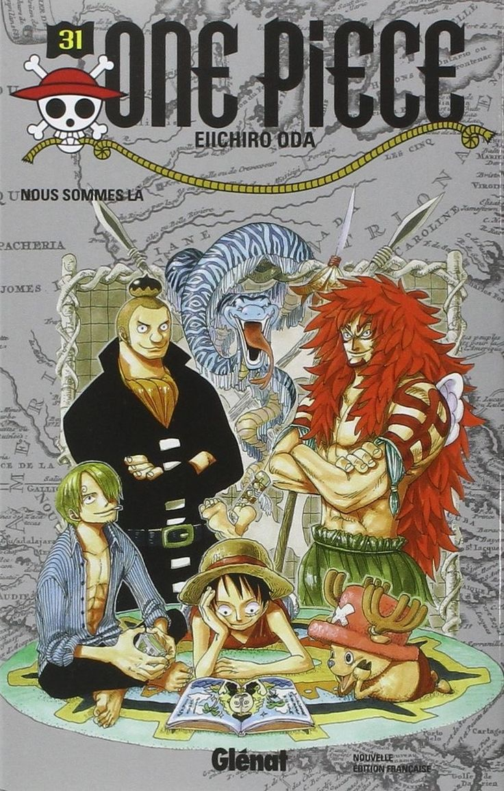
Eiichiro Oda
Ilha de Jaya
A tripulação deixa Vivi para trás em prantos e continua sua jornada com a Sra. All
Sunday, também conhecida como Nico Robin, ingressando como arqueóloga. Quando um navio cai inexplicavelmente
do céu e o Log Pose começa a apontar para cima, eles vão até a ilha de Jaya em busca de informações sobre a
"Ilha do Céu". Lá, eles encontram Bellamy, um pirata que está anunciando uma "Nova Era" onde os piratas não
sonham, e um homem chamado Mont Blanc Cricket, um descendente de um sujeito de uma história de advertência. Com a Princesa Vivi de volta em segurança em Alabasta e um novo companheiro de tripulação, Nico Robin, a bordo, a próxima aventura dos Chapéus de Palha começa quando um navio gigante cai repentinamente do céu. Neste ponto, o Log Pose começa a apontar para cima e Robin explica que o tronco está "capturado" por uma ilha com um campo magnético mais forte - uma Sky Island. Enquanto exploram as ruínas do navio que está afundando, eles se deparam com um antigo mapa de uma terra chamada Skypiea. Através de uma caveira e alguns livros, eles descobrem que o navio é o Saint Briss, que deixou o Reino da Brisa em South Blue há 208 anos. Isso desperta o interesse da tripulação e eles decidem salvar o navio naufragado.
Episódios : 9 (144-152)
Volumes: 2 (24-25)
Pontos-chave da trama: Barba Negra , Barba Branca , Bartholomew Kuma , Donquixote Doflamingo , Sengoku e os Cinco Anciãos são apresentados.
Características do Arco
Capítulos : 19 (218-236)Episódios : 9 (144-152)
Volumes: 2 (24-25)
Pontos-chave da trama: Barba Negra , Barba Branca , Bartholomew Kuma , Donquixote Doflamingo , Sengoku e os Cinco Anciãos são apresentados.
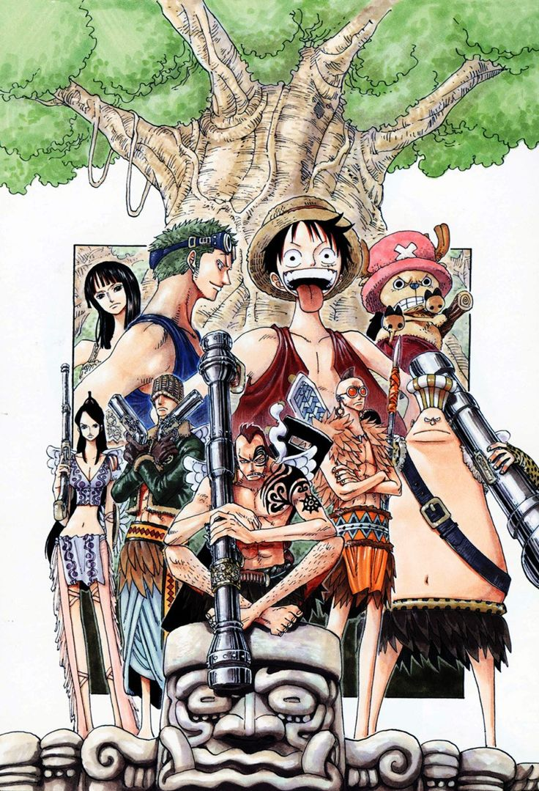
Eiichiro Oda
Ilha do Céu: Skypiea
Viajando no Knock Up Stream, a tripulação se encontra no “Mar Branco”, um oceano no
céu. Os Chapéus de Palha logo descobrem que há uma guerra entre o Povo do Céu e os nativos que originalmente
habitavam um lugar conhecido como Pátio Superior. Eles também aprendem sobre o cruel Deus Enel. Tendo navegado no Knock Up Stream, os Chapéus de Palha se encontram em um mar de nuvens (que, como eles descobrem, tem o mesmo efeito que a água normal em um usuário de Akuma no Mi), mas antes que tenham a chance de relaxar, são rapidamente atacados por um homem estranho mascarado que cavalga nas nuvens. A tripulação não consegue se defender, mas felizmente é salva por um velho cavaleiro chamado Gan Fall, que monta em um pássaro com poderes de Akuma no Mi chamado Pierre. Ele ressalta que o motivo pelo qual não conseguiram revidar a “Guerrilha” foi por causa do ar rarefeito, mas logo em seguida a tripulação diz que estão começando a se acostumar. Gan Fall dá-lhes um apito para convocá-lo caso tenham mais problemas, e a tripulação continua.
Episódios : 43 (153-195)
Volumes: 7 (26-32)
Pontos principais da trama: Haki é sugerido pela primeira vez por Mantra ; Poseidon é mencionado pela primeira vez; O Going Merry sofre danos significativos; Os Chapéus de Palha obtêm uma grande soma de ouro.
Características do Arco
Capítulos : 66 (237-302)Episódios : 43 (153-195)
Volumes: 7 (26-32)
Pontos principais da trama: Haki é sugerido pela primeira vez por Mantra ; Poseidon é mencionado pela primeira vez; O Going Merry sofre danos significativos; Os Chapéus de Palha obtêm uma grande soma de ouro.
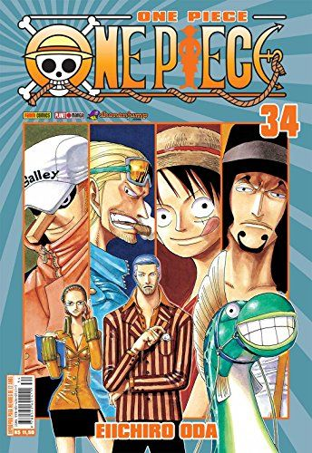
Eiichiro Oda
Ilha de Water 7
Em busca de um construtor naval para se juntar à tripulação, os Chapéus de Palha
desembarcam na próspera metrópole de Water 7. Aqui, a tripulação desmorona quando dois membros vão embora.
Para piorar a situação, os construtores navais não conseguem consertar o navio dos Chapéus de Palha, seu
dinheiro é roubado por bandidos e eles são acusados de tentativa de assassinato do prefeito de Water 7,
que também é presidente da Galley-La Company, uma empresa de construção naval. Eles tentam encontrar o
verdadeiro culpado, mas logo descobrem que podem ter sido pegos de surpresa pelo grupo de assassinos do
governo CP9. Após ser atacado por Aokiji , a tripulação se recuperou totalmente e voltou a navegar. Ao longo do caminho, a tripulação viu um sapo gigante rastejando e, querendo comê-lo, Luffy ordenou que todos fizessem o navio segui-lo. Eles acabaram em alguns trilhos debaixo d'água e quase foram atropelados por um trem que viajava sobre a água, e o sapo foi lançado voando por ele. Eles ficaram maravilhados com esta visão.
Episódios : 37 (229-263)
Volumes: 6 (34-39)
Pontos-chave da trama: O ouro que os Chapéus de Palha ganharam em Skypiea é roubado e gasto; Robin e Usopp vão embora; Sogeking e Franky juntam-se não oficialmente aos Chapéus de Palha para resgatar Robin; Cipher Pol é introduzido; O Perfect Clima-Tact de Nami é apresentado.
Características do Arco
Capítulos : 53 (322-374)Episódios : 37 (229-263)
Volumes: 6 (34-39)
Pontos-chave da trama: O ouro que os Chapéus de Palha ganharam em Skypiea é roubado e gasto; Robin e Usopp vão embora; Sogeking e Franky juntam-se não oficialmente aos Chapéus de Palha para resgatar Robin; Cipher Pol é introduzido; O Perfect Clima-Tact de Nami é apresentado.
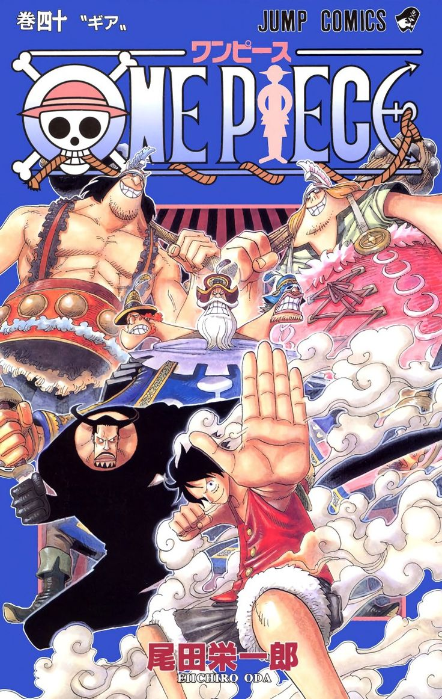
Eiichiro Oda
Enies Lobby. Uma ilha do Governo
Os Chapéus de Palha, a Família Franky e a Companhia Galley-La se unem para resgatar
Nico Robin, salvar Franky e vingar a tentativa de assassinato de Iceburg. Para isso, eles atacam Enies
Lobby, reduto governamental onde a CP9 está sediada, declarando guerra ao Governo Mundial. Descansando após
suas provações em Enies Lobby, o mundo dos Chapéus de Palha vira de cabeça para baixo quando rostos
familiares retornam com revelações inesperadas para a continuação de sua jornada. No Novo Mundo, Shanks faz
a sua jogada para proteger o subordinado do Barba Branca, Ace, de um rosto familiar com um novo poder
horrível. Reunidos com Sanji e Sogeking (Usopp) logo depois no Rocketman, os Chapéus de Palha, junto com a Família Franky e Galley-La, iniciaram um ataque total à ilha governamental de Enies Lobby contra milhares de soldados da Marinha e os agentes da Cipher Pol em um último esforço para resgatar seus amigos Nico Robin e Franky antes que sejam arrastados pelos Portões da Justiça. As portas maciças são a única coisa que separa Robin e Franky de seus respectivos destinos: o quartel-general da Marinha e a terrível prisão de Impel Down.
Episódios : 46 (264-290, 293-302 e 304-312); Os episódios 279 - 283 são recapitulações.
Volumes: 6 (39-44)
Pontos-chave da trama: Robin se junta novamente; Akainu é apresentado em um flashback; vários power-ups para a tripulação são introduzidos ( Gears 2 e 3 de Luffy , Diable Jambe de Sanji , Nine Sword Style de Zoro , Kabuto de Usopp e Monster Point de Chopper ); Zoro perde Yubashiri ; o Going Merry é afundado, os Piratas do Chapéu de Palha declaram guerra ao Governo Mundial ; Tritões são apresentados.
Características do Arco
Capítulos : 56 (375-430)Episódios : 46 (264-290, 293-302 e 304-312); Os episódios 279 - 283 são recapitulações.
Volumes: 6 (39-44)
Pontos-chave da trama: Robin se junta novamente; Akainu é apresentado em um flashback; vários power-ups para a tripulação são introduzidos ( Gears 2 e 3 de Luffy , Diable Jambe de Sanji , Nine Sword Style de Zoro , Kabuto de Usopp e Monster Point de Chopper ); Zoro perde Yubashiri ; o Going Merry é afundado, os Piratas do Chapéu de Palha declaram guerra ao Governo Mundial ; Tritões são apresentados.

Eiichiro Oda
Thriller Bark
Os Chapéus de Palha, agora incluindo Franky e os membros que partiram anteriormente,
continuam sua aventura no Triângulo Florian, onde se deparam com um estranho barril que, ao ser aberto,
dispara um sinalizador. Isso logo se transforma em um pesadelo quando um navio fantasma os direciona para a
ilha assombrada de Thriller Bark, onde fantasmas, zumbis e o Warlord of the Sea Gecko Moria os aguardam. Poucos dias após sua partida de Water 7, os Chapéus de Palha aproveitam as características de seu novo navio; Usopp e Luffy vão pescar juntos e jogam tudo o que pescam no aquário, enquanto Robin, Franky e Sanji relaxam na sala de jantar. Nami toma banho na cabana de banho, Chopper aproveita seu quarto/enfermaria ampliado e Zoro tira um cochilo na torre de observação.
Episódios : 45 (337-381)
Volumes: 5 (46-50)
Pontos-chave da trama: Gecko Moria e Perona são apresentados; Zoro ganha Shusui ; Brook se junta; Charlotte Lola dá a Nami o Vivre Card de sua mãe ; Kaido , Boa Hancock e Wano são mencionados pela primeira vez; os Chapéus de Palha encontram Bartholomew Kuma ; Pacifistas são apresentados.
Características do Arco
Capítulos : 48 (442-489)Episódios : 45 (337-381)
Volumes: 5 (46-50)
Pontos-chave da trama: Gecko Moria e Perona são apresentados; Zoro ganha Shusui ; Brook se junta; Charlotte Lola dá a Nami o Vivre Card de sua mãe ; Kaido , Boa Hancock e Wano são mencionados pela primeira vez; os Chapéus de Palha encontram Bartholomew Kuma ; Pacifistas são apresentados.
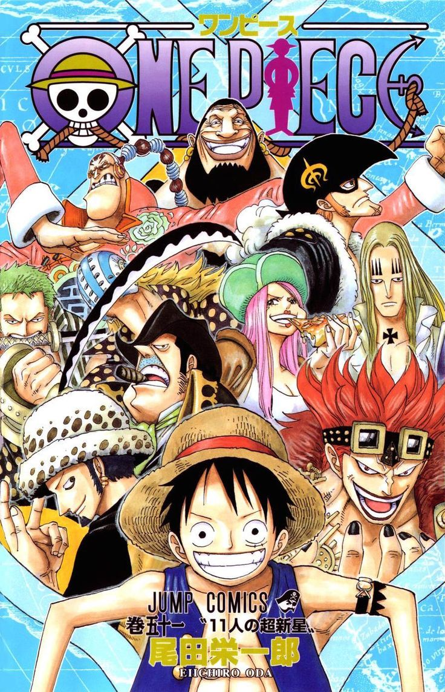
Eiichiro Oda
Arquipélago Sabaody
Chegando à Red Line, a tripulação, agora acompanhada pelo músico esqueleto Brook,
procura uma maneira de chegar à famosa Ilha dos Homens-Peixe. Os Chapéus de Palha logo são desviados de sua
busca quando uma sereia e uma estrela do mar falante aparecem, e eles logo se vêem salvando um velho inimigo
de uma quadrilha de sequestro. As coisas pioram quando os Chapéus de Palha ficam encurralados a cada passo
com um Senhor da Guerra do Mar, um almirante da Marinha e funcionários do Governo Mundial. Em Mary Geoise, o almirante da frota Sengoku castiga Bartholomew Kuma por não ir atrás dos Chapéus de Palha como planejado originalmente, enquanto o vice-almirante Monkey D. Garp conta ao líder dos fuzileiros navais sobre como Luffy conseguiu escapar de mais um inimigo do governo. Mesmo assim, Garp garante a Sengoku que Luffy não é alguém que irá espalhar o fato da derrota de Gecko Moria para outros.
Episódios : 21 (385-405)
Volumes: 4 (50-53)
Pontos-chave da trama: Luffy usa Haki pela primeira vez; a tripulação está separada; as Onze Supernovas ( Capone , Jewelry Bonney , Hawkins , Apoo , Kid , Killer , Urouge , X Drake e Trafalgar Law ) são introduzidas; Dragões Celestiais , Kizaru , Rayleigh e Voz de Todas as Coisas são apresentados.
Características do Arco
Capítulos : 24 (490-513)Episódios : 21 (385-405)
Volumes: 4 (50-53)
Pontos-chave da trama: Luffy usa Haki pela primeira vez; a tripulação está separada; as Onze Supernovas ( Capone , Jewelry Bonney , Hawkins , Apoo , Kid , Killer , Urouge , X Drake e Trafalgar Law ) são introduzidas; Dragões Celestiais , Kizaru , Rayleigh e Voz de Todas as Coisas são apresentados.
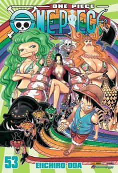
Eiichiro Oda
Amazon Lily
Kuma envia cada um dos Chapéus de Palha voando do Arquipélago Sabaody para diferentes
ilhas. Este arco é centrado em Luffy, que pousa em uma ilha onde vivem apenas mulheres. Luffy logo descobre
que as mulheres da ilha são lideradas pelo Senhor da Guerra do Mar Boa Hancock. No Bosque 41, Duval e seus Rosy Life Riders, apesar de preocupados com os Chapéus de Palha, decidem vigiar o Thousand Sunny até que ele possa ser revestido para que possa viajar para a Ilha dos Homens-Peixe. No Bosque 1, na casa de leilões, Saint Shalria está reclamando com os fuzileiros navais sobre sua falta de seriedade com os Piratas do Chapéu de Palha e também porque eles ainda não foram capturados. Também é visto que ela jura mostrar-lhes o inferno na Terra. No Shakky's Rip-off Bar, Camie também está preocupada com os Chapéus de Palha, embora Pappag e Hatchan pensem o contrário. Shakky permanece neutro ao comentar sobre eles enfrentando um almirante, antes de comentar que a era dos piratas está lentamente começando a mudar.
Episódios : 14 (408-421)
Volumes: 2 (53-54)
Ponto-chave da trama: Boa Hancock é apresentada e se torna uma aliada; Luffy descobre sobre a execução de Ace.
Características do Arco
Capítulos : 11 (514-524)Episódios : 14 (408-421)
Volumes: 2 (53-54)
Ponto-chave da trama: Boa Hancock é apresentada e se torna uma aliada; Luffy descobre sobre a execução de Ace.
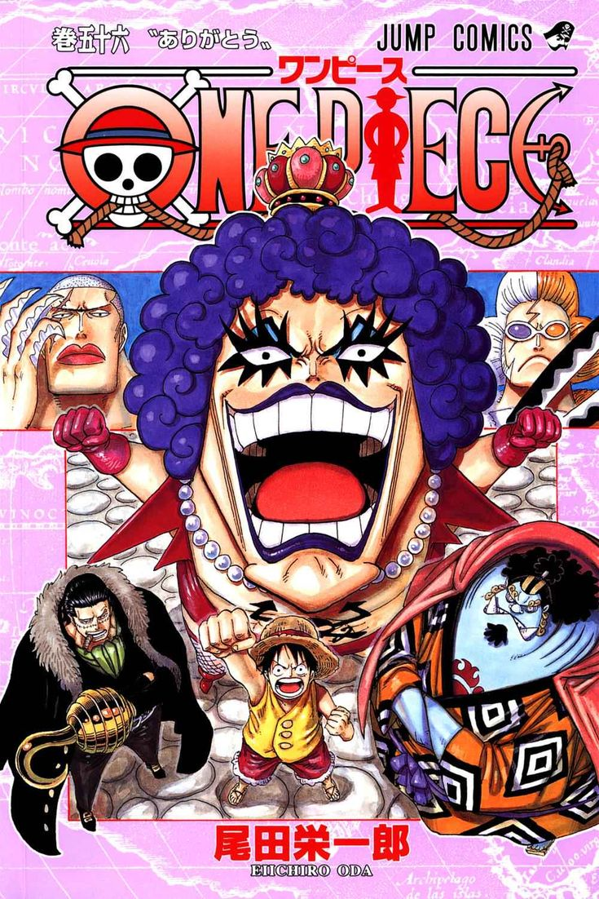
Eiichiro Oda
Prisão de Impel Down
Conquistando o coração da bela Hancock, Luffy consegue invadir a prisão de Impel Down,
na esperança de salvar seu irmão Ace da execução antes que isso desencadeie um confronto final entre os
Piratas do Barba Branca e o Governo Mundial. Garp visita Ace em Impel Down e expressa seu desapontamento porque tanto Luffy quanto Ace se voltaram para a pirataria quando ele desejou que eles fossem fuzileiros navais. Os contadores Ace não teriam importância de qualquer maneira, já que eles contêm o sangue de criminosos de classe mundial. Ele continua explicando que adotou o nome de sua mãe "Portgas" por amor a ela e não se importa nem um pouco com seu pai, alegando que Barba Branca é seu único pai verdadeiro.
Episódios : 27 (422-425 e 430-452)
Volumes: 3 (54-56)
Pontos-chave da trama: Emporio Ivankov e Jinbe são apresentados; muitos dos inimigos anteriores de Luffy escapam da prisão.
Características do Arco
Capítulos : 25 (525-549)Episódios : 27 (422-425 e 430-452)
Volumes: 3 (54-56)
Pontos-chave da trama: Emporio Ivankov e Jinbe são apresentados; muitos dos inimigos anteriores de Luffy escapam da prisão.
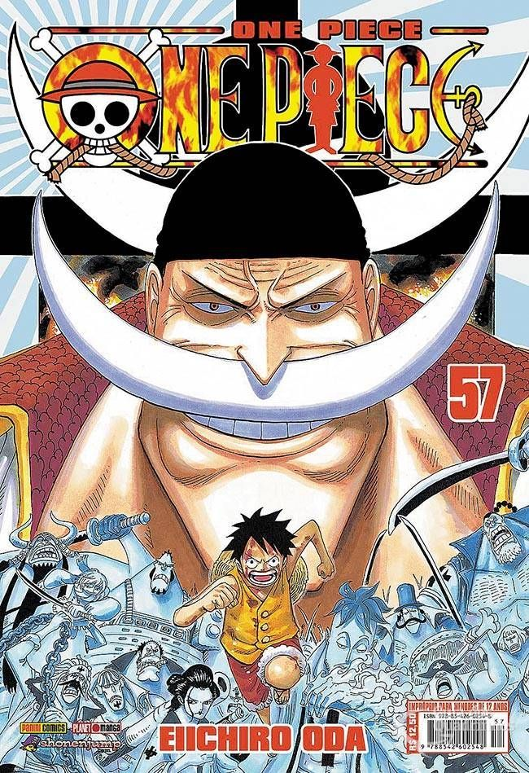
Eiichiro Oda
Guerra dos Maiorais
Incapaz de resgatar Ace antes de ele ser transferido, Luffy e seu grupo de fugitivos de
Impel Down seguem atrás dele até Marineford. Com o tempo a esgotar-se até à execução de Ace, os Piratas do
Barba Branca e o Governo Mundial preparam as suas forças para entrar em confronto numa batalha que poderá
mudar drasticamente a era. O impacto da morte de Barba Branca abala o mundo, causando caos em toda a Grand
Line. Luffy, lutando para lidar com a morte de Ace, lembra que tem algo igualmente importante para ele: sua
tripulação. Os Piratas do Chapéu de Palha algum dia se reunirão?
Episódios : 33 (457-489); Os episódios 457 - 458 são recapitulações.
Volumes: 4 (56-59)
Pontos-chave da trama: Akainu é apresentado oficialmente; Portgas D. Ace e Barba Branca morrem; Barba Branca confirma que One Piece é real; Barba Negra misteriosamente rouba a habilidade da Akuma no Mi de Barba Branca e reforça sua tripulação com presos de Impel Down .
Características do Arco
Capítulos : 31 (550-580)Episódios : 33 (457-489); Os episódios 457 - 458 são recapitulações.
Volumes: 4 (56-59)
Pontos-chave da trama: Akainu é apresentado oficialmente; Portgas D. Ace e Barba Branca morrem; Barba Branca confirma que One Piece é real; Barba Negra misteriosamente rouba a habilidade da Akuma no Mi de Barba Branca e reforça sua tripulação com presos de Impel Down .
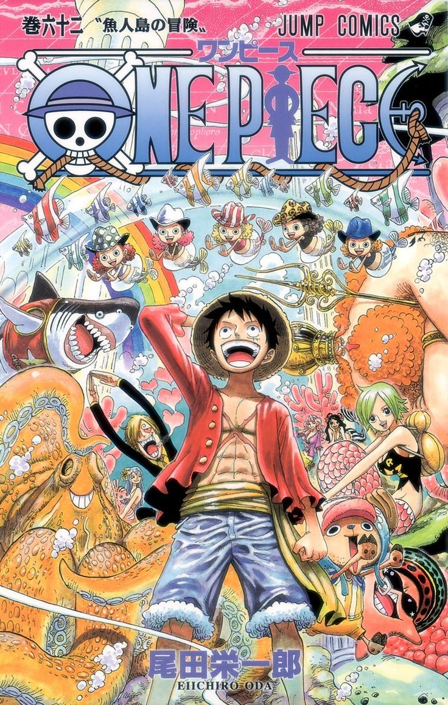
Eiichiro Oda
Ilha dos Homens-Peixe
Depois de dois anos, os Chapéus de Palha estão finalmente começando sua jornada
submarina para a Ilha dos Homens-Peixe, e encontram o amigo de Luffy, o ex-Senhor da Guerra Jinbei. Quando
uma cartomante local prevê que Luffy destruirá a Ilha dos Homens-Peixe, os Chapéus de Palha são falsamente
acusados de criminosos e, para complicar ainda mais as coisas, uma aliança entre Hordy Jones e Vander Decken
IX planeja assumir o controle do Reino Ryugu. Após a fuga dos Chapéus de Palha, em um lugar no Arquipélago Sabaody conhecido como "Terra de Ninguém", Coribou e Caribou, junto com sua tripulação, capturaram o restante da Tripulação dos Chapéus de Palha Falsos e estão cavando suas sepulturas. Os falsos imploram aos irmãos que os deixem ir, mas eles recusam, revelando que planejaram matar os verdadeiros Chapéus de Palha por dentro depois de se juntarem a eles e não acharam graça quando descobriram que haviam mentido para eles.
Episódios : 51 (523-541 e 543-574)
Volumes: 6 (61-66)
Pontos-chave da trama: Joy Boy , Koala e Big Mom são apresentados; Shirahoshi é apresentado e revelado ser o atual Poseidon ; Luffy consegue ouvir a Voz de Todas as Coisas ; Akainu é revelado como o novo Almirante da Frota ; Jinbei é convidado a se juntar à tripulação , mas recusa devido a outras afiliações com os Big Mom Pirates.
Características do Arco
Capítulos : 51 (603-653)Episódios : 51 (523-541 e 543-574)
Volumes: 6 (61-66)
Pontos-chave da trama: Joy Boy , Koala e Big Mom são apresentados; Shirahoshi é apresentado e revelado ser o atual Poseidon ; Luffy consegue ouvir a Voz de Todas as Coisas ; Akainu é revelado como o novo Almirante da Frota ; Jinbei é convidado a se juntar à tripulação , mas recusa devido a outras afiliações com os Big Mom Pirates.
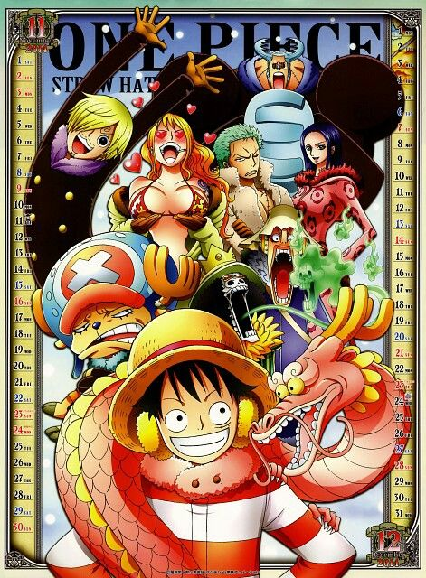
Eiichiro Oda
Ilha de Punk Hazard
Após entrarem no Novo Mundo, os Chapéus de Palha são levados até Punk Hazard por um
pedido de socorro. Lá, eles encontram um samurai em busca de seu filho, entram em conflito com o novo
pelotão da Marinha de Smoker e se juntam a Trafalgar Law em uma conspiração para derrubar um dos Quatro
Imperadores. Como parte dessa trama, eles têm a tarefa de capturar César Clown, o cientista maluco que atua
na ilha e ficar sabendo de suas conexões com o Submundo e seu influente corretor, o Senhor da Guerra do Mar
Donquixote Doflamingo. Enquanto os Chapéus de Palha partem da Ilha dos Homens-Peixe, a tripulação tem algum tempo livre. Nami decide passar o seu tomando banho, usando um novo Shower Tempo como chuveiro com Chopper (e sem ela saber, Sanji e Brook) olhando. Enquanto isso, o resto da tripulação decide ir pescar. Luffy nocauteia um peixe, mas atrai outro maior, e esse peixe atrai uma enguia ainda maior. Zoro a mata, mas o peso do peixe faz o navio parar. Para piorar a situação, um redemoinho subaquático, chamado de White Strom, aparece de repente na frente deles. A enguia é sugada arrastando o Thousand Sunny para dentro dela.
Episódios : 46 (579-589 e 591-625)
Volumes: 5 (66-70)
Pontos-chave da trama: É revelado que Trafalgar Law e Buggy se tornaram parte dos Sete Senhores da Guerra do Mar; Caesar Clown , Kin'emon e Momonosuke são apresentados; os Heart Pirates tornam-se aliados.
Características do Arco
Capítulos : 46 (654-699)Episódios : 46 (579-589 e 591-625)
Volumes: 5 (66-70)
Pontos-chave da trama: É revelado que Trafalgar Law e Buggy se tornaram parte dos Sete Senhores da Guerra do Mar; Caesar Clown , Kin'emon e Momonosuke são apresentados; os Heart Pirates tornam-se aliados.

Eiichiro Oda
Ilha de DressRosa
Os Chapéus de Palha, Law, Kin'emon e Momonosuke vão para Dressrosa com um César cativo
para negociar um acordo com Doflamingo, destruir sua Fábrica SMILE e libertar o camarada do samurai,
Kanjuro. Eles logo descobrem que Doflamingo e Dressrosa estão envoltos em muitos segredos, e o conflito de
Law com Doflamingo rapidamente se torna pessoal. Luffy trabalha para obter a Akuma no Mi de seu falecido
irmão, enquanto os outros Chapéus de Palha encontram faíscas de rebelião entre a população de Dressrosa. Os
esforços da aliança ficam ainda mais complicados quando um novo almirante da Marinha chamado Fujitora chega
para lidar com eles.
Episódios : 118 (629-746)
Volumes: 11 (70-80)
Pontos-chave da trama: Os Piratas do Chapéu de Palha são divididos em 2 grupos; é criada a Grande Frota do Chapéu de Palha ; Kanjuro e Fujitora são introduzidos; Sabo está vivo; O nome completo de Trafalgar D. Water Law é revelado; Mais informações sobre os Dragões Celestiais são reveladas; A engrenagem 4 é introduzida; Kaidou é apresentado.
Características do Arco
Capítulos : 102 (700-801)Episódios : 118 (629-746)
Volumes: 11 (70-80)
Pontos-chave da trama: Os Piratas do Chapéu de Palha são divididos em 2 grupos; é criada a Grande Frota do Chapéu de Palha ; Kanjuro e Fujitora são introduzidos; Sabo está vivo; O nome completo de Trafalgar D. Water Law é revelado; Mais informações sobre os Dragões Celestiais são reveladas; A engrenagem 4 é introduzida; Kaidou é apresentado.
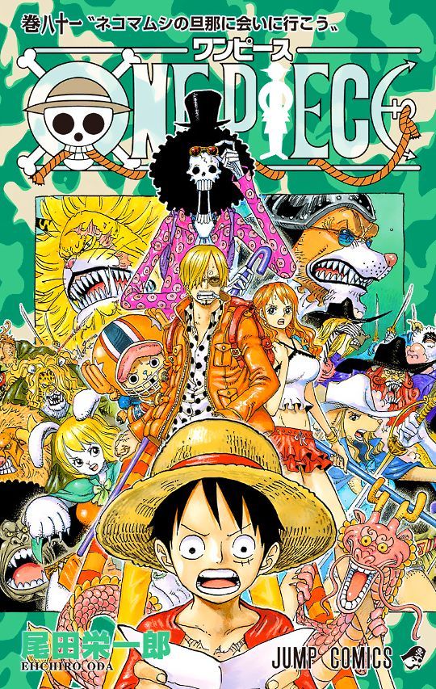
Eiichiro Oda
Ilha que não para: Zou
Os Chapéus de Palha, Law e o samurai vão para Zou para se reunir com os Chapéus de
Palha e Momonosuke que deixaram Dressrosa mais cedo. Eles conhecem os nativos da Tribo Mink e descobrem que
Sanji se foi após se envolver em uma conspiração entre sua família e os Piratas da Big Mom. Eles também
aprendem como os Piratas Jack of the Beasts atacaram Zou anteriormente, e os samurais revelam o quanto Kaido
está conectado a eles e à sua casa em Wano, levando à formação de uma nova aliança. Os Chapéus de Palha se
separaram novamente para resgatar Sanji e ir para Wano.
Episódios : 29 (751-779)
Volumes: 3 (80-82)
Pontos-chave da trama: A tripulação está reunida, exceto Sanji , que foi levado pelos Piratas da Big Mom ; Kozuki Oden é apresentado; a Aliança Ninja-Pirata-Mink-Samurai é formada; a tripulação se divide novamente; Pedro e Cenoura são apresentados e se tornam aliados; a tripulação aprende sobre Road Poneglyphs e encontra o primeiro. A verdadeira identidade de Momonosuke é revelada, dizendo que ele não é filho de Kin'emon .
Características do Arco
Capítulos : 23 (802-824)Episódios : 29 (751-779)
Volumes: 3 (80-82)
Pontos-chave da trama: A tripulação está reunida, exceto Sanji , que foi levado pelos Piratas da Big Mom ; Kozuki Oden é apresentado; a Aliança Ninja-Pirata-Mink-Samurai é formada; a tripulação se divide novamente; Pedro e Cenoura são apresentados e se tornam aliados; a tripulação aprende sobre Road Poneglyphs e encontra o primeiro. A verdadeira identidade de Momonosuke é revelada, dizendo que ele não é filho de Kin'emon .

Eiichiro Oda
Ilha de Whole Cake
O grupo de Luffy viaja para Whole Cake Island para resgatar Sanji de um casamento
político entre a Família Vinsmoke e a Família Charlotte. Eles ficam presos entre as agendas ocultas das
famílias e formam uma aliança com Jinbe, César e os Piratas Fire Tank para derrubar Big Mom e salvar os
Vinsmokes. Os Piratas Big Mom chegaram ao seu território, Totto Land, com Sanji a reboque. Sanji se recusou a aceitar sua situação, embora tenha ficado apaixonado por Charlotte Pudding quando Vito lhe deu uma foto dela. Vito então conversou com Sanji sobre como ele admirava Germa 66, que foram retratados como vilões nos quadrinhos Sora, Guerreiro do Mar. Sanji ignorou Vito, fazendo com que Gotti, companheiro de tripulação de Vito, ameaçasse Sanji, mas a esposa de Bege, Charlotte Chiffon, impediu Gotti de machucar Sanji.
Episódios : 95 (783-877)
Volumes: 9 (82-90)
Pontos-chave da trama: Sanji se reúne com metade da tripulação ; Jinbei cortou relações com os Piratas Big Mom e se juntou à tripulação, mas ficou para trás para ajudar seus subordinados ; Caesar Clown e os Fire Tank Pirates tornam-se aliados temporários; Pedro morre; Gear 4: Tankman e Gear 4: Snakeman são introduzidos; a tripulação obtém a gravura Road Poneglyph de Big Mom .
Características do Arco
Capítulos : 78 (825-902)Episódios : 95 (783-877)
Volumes: 9 (82-90)
Pontos-chave da trama: Sanji se reúne com metade da tripulação ; Jinbei cortou relações com os Piratas Big Mom e se juntou à tripulação, mas ficou para trás para ajudar seus subordinados ; Caesar Clown e os Fire Tank Pirates tornam-se aliados temporários; Pedro morre; Gear 4: Tankman e Gear 4: Snakeman são introduzidos; a tripulação obtém a gravura Road Poneglyph de Big Mom .
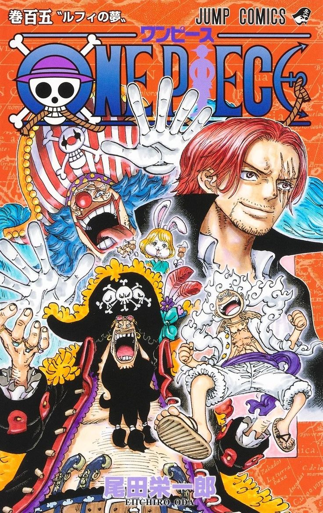
Eiichiro Oda
País de Wano
A Aliança Ninja-Pirata-Mink-Samurai se reúne no País de Wano e se prepara para a
batalha contra os Piratas das Feras. A história de Kozuki Oden e seus laços com o País de Wano, Barba Branca
e Gol D. Roger são revelados, e a aliança ataca Onigashima para derrubar as forças aliadas de Kaido e Big
Mom, enquanto as alianças mudam em todos os lados do cerco. Enquanto isso, após os acontecimentos durante o
recente Levely, o mundo passa por mudanças dramáticas. Luffy e Sunny foram parar na praia de Kuri, e depois de acordar, Luffy imediatamente encontrou um babuíno com uma espada chamado Hihimaru lutando contra um komainu chamado Komachiyo. Perto dali, um grupo de batedores dos Piratas das Feras estava cavalgando para a costa com uma jovem cativa chamada Tama, que eles capturaram depois que ela mencionou a Família Kozuki quando a estavam assediando no mercado.
Episódios : 191 (890-894, 897-906, 908-1028, 1031-1085)
Volumes: 16 (90-105)
Pontos-chave da trama: Zoro perde Shusui e obtém Enma ; o sistema Warlord é dissolvido; As rochas D. Xebec , Yamato e Ryokugyu são introduzidas; The One Piece e sua conexão com Joy Boy são revelados; Jinbei se reagrupa com a tripulação; A tripulação recebe muitos power-ups ( Zeus se funde com o Clima-Tact de Nami ; Sanji desperta suas habilidades genéticas ; Sanji "desperta" sua versão superior de Diable Jambe , Ifrit Jambe ; Zoro desperta seu Haoshoku Haki ; Luffy desperta sua Akuma no Mi e Gear 5 é introduzido); Trafalgar Law e Eustass Kid despertam seus poderes de Akuma no Mi; A verdadeira identidade da Akuma no Mi de Luffy é revelada; A tripulação ganha acesso à Road Poneglyph localizada em Wano; Kaidou & Big Mom são derrotados, e suas posições nos Quatro Imperadores são substituídas por Luffy e Buggy ; Carrot , Kin'emon e Kozuki Momonosuke se separam dos Chapéus de Palha; A Guilda Cruz é fundada.
Características do Arco
Capítulos : 149 (909-1057)Episódios : 191 (890-894, 897-906, 908-1028, 1031-1085)
Volumes: 16 (90-105)
Pontos-chave da trama: Zoro perde Shusui e obtém Enma ; o sistema Warlord é dissolvido; As rochas D. Xebec , Yamato e Ryokugyu são introduzidas; The One Piece e sua conexão com Joy Boy são revelados; Jinbei se reagrupa com a tripulação; A tripulação recebe muitos power-ups ( Zeus se funde com o Clima-Tact de Nami ; Sanji desperta suas habilidades genéticas ; Sanji "desperta" sua versão superior de Diable Jambe , Ifrit Jambe ; Zoro desperta seu Haoshoku Haki ; Luffy desperta sua Akuma no Mi e Gear 5 é introduzido); Trafalgar Law e Eustass Kid despertam seus poderes de Akuma no Mi; A verdadeira identidade da Akuma no Mi de Luffy é revelada; A tripulação ganha acesso à Road Poneglyph localizada em Wano; Kaidou & Big Mom são derrotados, e suas posições nos Quatro Imperadores são substituídas por Luffy e Buggy ; Carrot , Kin'emon e Kozuki Momonosuke se separam dos Chapéus de Palha; A Guilda Cruz é fundada.

Eiichiro Oda
Ilha do Futuro: Egghead
As consequências do Levely, do Raid on Onigashima e do apagamento do Reino Lulusia
causam grandes mudanças em todo o mundo que podem levar a uma guerra global. Os Piratas do Chapéu de Palha,
seguindo seu Log Pose, chegam à misteriosa e futurista ilha Egghead onde reside o supergênio Dr. No entanto,
depois de serem informados sobre a pesquisa de Vegapunk sobre o Século Vazio, o Governo Mundial decide
enviar uma equipe CP0 para assassinar Vegapunk. Traição e intriga de todos os lados levam a um cerco da
Marinha à ilha que se transformará em um incidente que chocará o mundo. Depois de se recuperar da perigosa descida pela cachoeira de Wano, Nami colocou Luffy em uma gaiola para puni-lo. Eles então receberam o jornal, aprendendo sobre suas novas recompensas e sobre os muitos eventos massivos que ocorreram durante seu tempo em Wano. Eles ficaram horrorizados com a notícia da morte de Cobra e do desaparecimento de Vivi. Luffy imediatamente quis ir resgatar Vivi, mas Zoro o dissuadiu, dizendo que eles deveriam permitir que Vivi cuidasse de si mesma até que ficasse claro que ela estava em perigo iminente.
Episódios : 23 (1086-)
Volumes: 4 (105-)
Pontos principais da trama: Os Piratas do Barba Negra agora são todos usuários de Akuma no Mi ; Sabo revela que viu Imu no Trono Vazio ; Os Serafins são apresentados; Vegapunk e seus satélites são apresentados; Jewelry Bonney é revelada como filha de Kuma ; detalhes do Século Vazio são revelados; É revelado que Jaguar D. Saul está vivo; os Cinco Anciões encontram os Chapéus de Palha; Eustass Kid e Trafalgar Law lutam contra Shanks e Barba Negra respectivamente e os Kid Pirates e Heart Pirates são destruídos; A raça Buccaneer é introduzida; Vegapunk morre.
Características do Arco
Capítulos : 59 (1058-)Episódios : 23 (1086-)
Volumes: 4 (105-)
Pontos principais da trama: Os Piratas do Barba Negra agora são todos usuários de Akuma no Mi ; Sabo revela que viu Imu no Trono Vazio ; Os Serafins são apresentados; Vegapunk e seus satélites são apresentados; Jewelry Bonney é revelada como filha de Kuma ; detalhes do Século Vazio são revelados; É revelado que Jaguar D. Saul está vivo; os Cinco Anciões encontram os Chapéus de Palha; Eustass Kid e Trafalgar Law lutam contra Shanks e Barba Negra respectivamente e os Kid Pirates e Heart Pirates são destruídos; A raça Buccaneer é introduzida; Vegapunk morre.
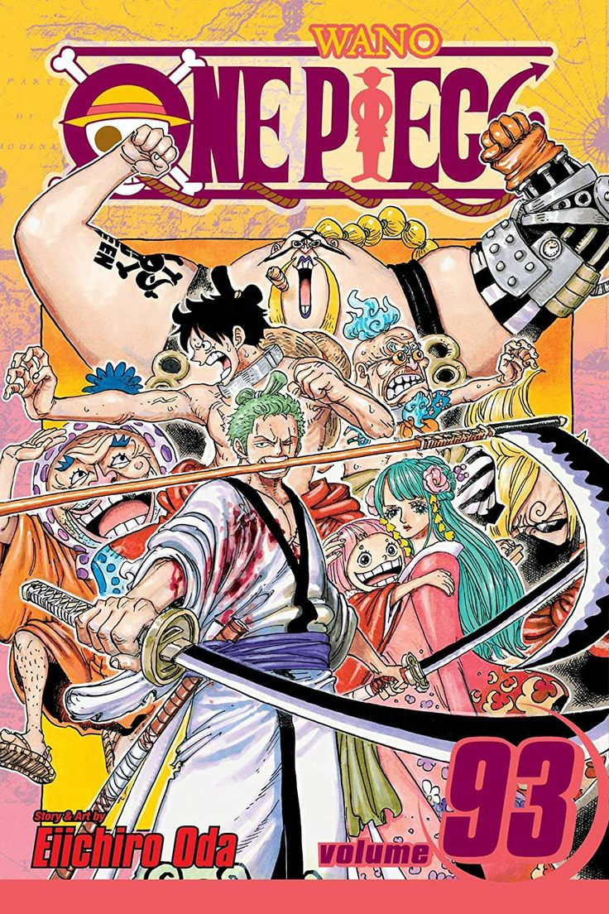